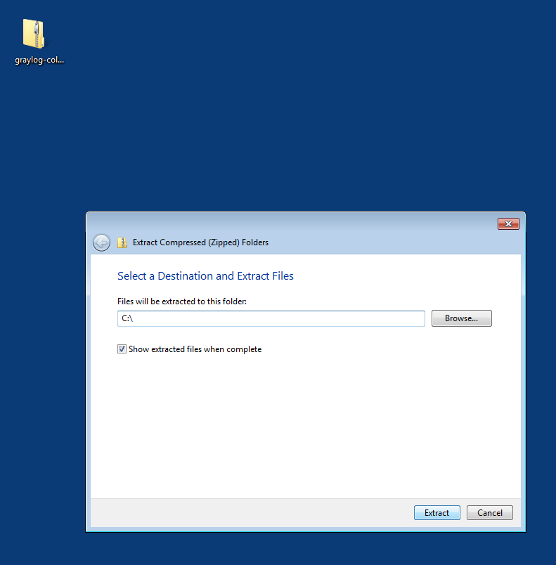
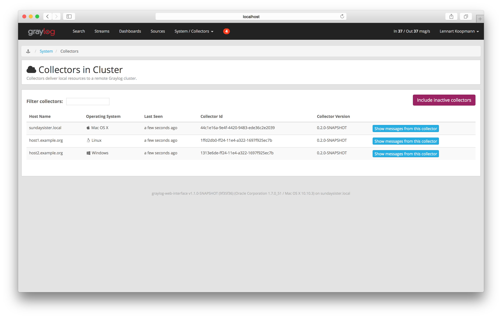

Graylog Collector¶
Graylog Collector is a lightweight Java application that allows you to forward data from log files to a Graylog cluster. The collector can read local log files and also Windows Events natively, it then can forward the log messages over the network using the GELF format.
Installation¶
Linux/Unix¶
You need to have Java >= 7 installed to run the collector.
Operating System Packages¶
We offer official package repositories for the following operating systems.
- Ubuntu 12.04, 14.04
- Debian 8
- CentOS 7
Please open an issue in the Github repository if you run into any packaging related issues. Thank you!
Ubuntu 14.04
Download and install graylog-collector-latest-repository-ubuntu14.04_latest.deb
via dpkg(1) and also make sure that the apt-transport-https package is installed:
$ wget https://packages.graylog2.org/repo/packages/graylog-collector-latest-repository-ubuntu14.04_latest.deb
$ sudo dpkg -i graylog-collector-latest-repository-ubuntu14.04_latest.deb
$ sudo apt-get install apt-transport-https
$ sudo apt-get update
$ sudo apt-get install graylog-collector
Ubuntu 12.04
Download and install graylog-collector-latest-repository-ubuntu12.04_latest.deb
via dpkg(1) and also make sure that the apt-transport-https package is installed:
$ wget https://packages.graylog2.org/repo/packages/graylog-collector-latest-repository-ubuntu12.04_latest.deb
$ sudo dpkg -i graylog-collector-latest-repository-ubuntu12.04_latest.deb
$ sudo apt-get install apt-transport-https
$ sudo apt-get update
$ sudo apt-get install graylog-collector
Debian 8
Download and install graylog-collector-latest-repository-debian8_latest.deb
via dpkg(1) and also make sure that the apt-transport-https package is installed:
$ wget https://packages.graylog2.org/repo/packages/graylog-collector-latest-repository-debian8_latest.deb
$ sudo dpkg -i graylog-collector-latest-repository-debian8_latest.deb
$ sudo apt-get install apt-transport-https
$ sudo apt-get update
$ sudo apt-get install graylog-collector
CentOS 7
Download and install graylog-collector-latest-repository-el7_latest.rpm
via rpm(8):
$ sudo rpm -Uvh https://packages.graylog2.org/repo/packages/graylog-collector-latest-repository-el7_latest.rpm
$ sudo yum install graylog-collector
Manual Setup¶
- Download the latest collector release. (find download links in the collector repository README)
- Unzip collector tgz file to target location
- cp
config/collector.conf.exampletoconfig/collector.conf - Update server-url in collector.conf to correct Graylog server address (required for registration)
- Update file input configuration with the correct log files
- Update outputs->gelf-tcp with the correct Graylog server address (required for sending GELF messages)
Note: The collector will not start properly if you do not set the URL or the correct input log files and GELF output configuration
Windows¶
You need to have Java >= 7 installed to run the collector.
Download a release zip file from the collector repository README. Unzip the collector zip file to target location.
Change into the extracted collector directory and create a collector configuration file in config\collector.conf.

The following configuration file shows a good starting point for Windows systems. It collects the Application, Security, and System event logs.
Replace the <your-graylog-server-ip> with the IP address of your Graylog server.
Example:
server-url = "http://<your-graylog-server-ip>:12900/"
inputs {
win-eventlog-application {
type = "windows-eventlog"
source-name = "Application"
poll-interval = "1s"
}
win-eventlog-system {
type = "windows-eventlog"
source-name = "System"
poll-interval = "1s"
}
win-eventlog-security {
type = "windows-eventlog"
source-name = "Security"
poll-interval = "1s"
}
}
outputs {
gelf-tcp {
type = "gelf"
host = "<your-graylog-server-ip>"
port = 12201
}
}
Start a cmd.exe, change to the collector installation path and execute the following commands to install the collector as Windows service.
Commands:
C:\> cd graylog-collector-0.2.2
C:\graylog-collector-0.2.2> bin\graylog-collector-service.bat install GraylogCollector
C:\graylog-collector-0.2.2> bin\graylog-collector-service.bat start GraylogCollector
Configuration¶
You will need a configuration file before starting the collector. The configuration file is written in the HOCON format which is a human-optimized version of JSON.
If you choose the operating system installation method, the configuration file defaults to /etc/graylog/collector/collector.conf. For the manual installation method you have to pass the path to the configuration to the start script. (see Running Graylog Collector)
Here is a minimal configuration example that collects logs from the /var/log/syslog file and sends them to a Graylog server:
server-url = "http://10.0.0.1:12900/"
inputs {
syslog {
type = "file"
path = "/var/log/syslog"
}
}
outputs {
graylog-server {
type = "gelf"
host = "10.0.0.1"
port = 12201
}
}
There are a few global settings available as well as several sections which configure different subsystems of the collector.
Global Settings¶
server-url- The API URL of the Graylog serverUsed to send a heartbeat to the Graylog server.
(default:
"http://localhost:12900")enable-registration- Enable heartbeat registrationEnables the heartbeat registration with the Graylog server. The collector will not contact the Graylog server API for heartbeat registration if this is set to
false.(default:
true)collector-id- Unique collector ID settingThe ID used to identify this collector. Can be either a string which is used as ID, or the location of a file if prefixed with
file:. If the file does not exist, an ID will be generated and written to that file. If it exists, it is expected to contain a single string without spaces which will be used for the ID.(default:
"file:config/collector-id")
Input Settings¶
The input settings need to be nested in a input { } block. Each input has an ID and a type:
inputs {
syslog { // => The input ID
type = "file" // => The input type
...
}
}
An input ID needs to be unique among all configured inputs. If there are two inputs with the same ID, the last one wins.
The following input types are available.
File Input¶
The file input follows files in the file system and reads log data from them.
type- This needs to be set to
"file". pathThe path to a file that should be followed.
Please make sure to escape the
\character in Windows paths:path = "C:\\Program Files\\Apache2\\logs\\www.example.com.access.log"(default: none)
path-glob-rootThe globbing root directory that should be monitored. See below for an explanation on globbing.
Please make sure to escape the
\character in Windows paths:path = "C:\\Program Files\\Apache2\\logs\\www.example.com.access.log"(default: none)
path-glob-patternThe globbing patttern. See below for an explanation on globbing.
(default: none)
content-splitterThe content splitter implementation that should be used to detect the end of a log message.
Available content splitters:
NEWLINE,PATTERNSee below for an explanation on content splitters.
(default:
"NEWLINE")content-splitter-patternThe pattern that should be used for the
PATTERNcontent splitter.(default: none)
charsetCharset of the content in the configured file(s).
Can be one of the Supported Charsets of the JVM.
(default:
"UTF-8")reader-intervalThe interval in which the collector tries to read from every configured file. You might set this to a higher value like
1sif you have files which do not change very often to avoid unnecessary work.(default:
"100ms")
Globbing / Wildcards
You might want to configure the collector to read from lots of different files or files which have a different name each time they are rotated. (i.e. time/date in a filename) The file input supports this via the path-glob-root and path-glob-pattern settings.
A usual glob/wildcard string you know from other tools might be /var/log/apache2/**/*.{access,error}.log. This means you are interested in all log files which names end with .access.log or .error.log and which are in a sub directory of /var/log/apache2. Example: /var/log/apache2/example.com/www.example.com.access.log
For compatibility reasons you have to split this string into two parts. The root and the pattern.
Examples:
// /var/log/apache2/**/*.{access,error}.log
path-glob-root = "/var/log/apache2"
path-glob-pattern = "**/*.{access,error}.log"
// C:\Program Files\Apache2\logs\*.access.log
path-glob-root = "C:\\Program Files\\Apache2\\logs" // Make sure to escape the \ character in Windows paths!
path-glob-pattern = "*.access.log"
The file input will monitor the path-glob-root for new files and checks them against the path-glob-pattern to decide if they should be followed or not.
All available special characters for the glob pattern are documented in the Java docs for the getPathMatcher() method.
Content Splitter
One common problem when reading from plain text log files is to decide when a log message is complete. By default, the file input considers each line in a file to be a separate log message:
Jul 15 10:27:08 tumbler anacron[32426]: Job `cron.daily' terminated # <-- Log message 1
Jul 15 10:27:08 tumbler anacron[32426]: Normal exit (1 job run) # <-- Log message 2
But there are several cases where this is not correct. Java stack traces are a good example:
2015-07-10T11:16:34.486+01:00 WARN [InputBufferImpl] Unable to process event RawMessageEvent{raw=null, uuid=bde580a0-26ec-11e5-9a46-005056b26ca9, encodedLength=350}, sequence 19847516
java.lang.NullPointerException
at org.graylog2.shared.buffers.JournallingMessageHandler$Converter.apply(JournallingMessageHandler.java:89)
at org.graylog2.shared.buffers.JournallingMessageHandler$Converter.apply(JournallingMessageHandler.java:72)
at com.google.common.collect.Lists$TransformingRandomAccessList$1.transform(Lists.java:617)
at com.google.common.collect.TransformedIterator.next(TransformedIterator.java:48)
at java.util.AbstractCollection.toArray(AbstractCollection.java:141)
at java.util.ArrayList.<init>(ArrayList.java:177)
at com.google.common.collect.Lists.newArrayList(Lists.java:144)
at org.graylog2.shared.buffers.JournallingMessageHandler.onEvent(JournallingMessageHandler.java:61)
at org.graylog2.shared.buffers.JournallingMessageHandler.onEvent(JournallingMessageHandler.java:36)
at com.lmax.disruptor.BatchEventProcessor.run(BatchEventProcessor.java:128)
at com.codahale.metrics.InstrumentedExecutorService$InstrumentedRunnable.run(InstrumentedExecutorService.java:176)
at java.util.concurrent.ThreadPoolExecutor.runWorker(ThreadPoolExecutor.java:1142)
at java.util.concurrent.ThreadPoolExecutor$Worker.run(ThreadPoolExecutor.java:617)
at java.lang.Thread.run(Thread.java:745)
2015-07-10T11:18:18.000+01:00 WARN [InputBufferImpl] Unable to process event RawMessageEvent{raw=null, uuid=bde580a0-26ec-11e5-9a46-005056b26ca9, encodedLength=350}, sequence 19847516
java.lang.NullPointerException
...
...
This should be one message but using a newline separator here will not work because it would generate one log message for each line.
To solve this problem, the file input can be configured to use a PATTERN content splitter. It creates separate log messages based on a regular expression instead of newline characters. A configuration for the stack trace example above could look like this:
inputs {
graylog-server-logs {
type = "file"
path = "/var/log/graylog-server/server.log"
content-splitter = "PATTERN"
content-splitter-pattern = "^\\d{4}-\\d{2}-\\d{2}T" // Make sure to escape the \ character!
}
}
This instructs the file input to split messages on a timestamp at the beginning of a line. So the first stack trace in the message above will be considered complete once a new timestamp is detected.
Windows Eventlog Input¶
The Windows eventlog input can read event logs from Windows systems.
type- This needs to be set to
"windows-eventlog". source-nameThe Windows event log system has several different sources from which events can be read.
Common source names:
Application,System,Security(default:
"Application")poll-intervalThis controls how often the Windows event log should be polled for new events.
(default:
"1s")
Example:
inputs {
win-eventlog-application {
type = "windows-eventlog"
source-name = "Application"
poll-interval = "1s"
}
}
Output Settings¶
The output settings need to be nested in a output { } block. Each output has an ID and a type:
outputs {
graylog-server { // => The output ID
type = "gelf" // => The output type
...
}
}
An output ID needs to be unique among all configured outputs. If there are two outputs with the same ID, the last one wins.
The following output types are available.
GELF Output¶
The GELF output sends log messages to a GELF TCP input on a Graylog server.
type- This needs to be set to
"gelf". hostHostname or IP address of the Graylog server.
(default: none)
portPort of the GELF TCP input on the Graylog server host.
(default: none)
client-tls- Enables TLS for the connection to the GELF TCP input. Requires a TLS-enabled GELF TCP input on the Graylog server. (default: false)
client-tls-cert-chain-filePath to a TLS certificate chain file. If not set, the default certificate chain of the JVM will be used.
(default: none)
client-tls-verify-certVerify the TLS certificate of the GELF TCP input on the Graylog server.
You might have to disable this if you are using a self-signed certificate for the GELF input and do not have any certificate chain file.
(default:
true)client-queue-sizeThe GELF client library that is used for this output has an internal queue of messages. This option configures the size of this queue.
(default:
512)client-connect-timeoutTCP connection timeout to the GELF input on the Graylog server.
(default:
5000)client-reconnect-delayThe delay before the output tries to reconnect to the GELF input on the Graylog server.
(default:
1000)client-tcp-no-delaySets the
TCP_NODELAYoption on the TCP socket that connects to the GELF input.(default:
true)client-send-buffer-sizeSets the TCP send buffer size for the connection to the GELF input.
It uses the JVM default for the operating system if set to
-1.(default:
-1)
STDOUT Output¶
The STDOUT output prints the string representation of each message to STDOUT. This can be useful for debugging purposes but should be disabled in production.
type- This needs to be set to
"stdout".
Static Message Fields¶
Sometimes it is useful to be able to add some static field to a message. This can help selecting extractors to run on the server, simplify stream routing and can make searching/filtering for those messages easier.
Every collector input can be configured with a message-fields option which takes key-value pairs. The key needs to be a string, the value can be a string or a number.
Example:
inputs {
apache-logs {
type = "file"
path = "/var/log/apache2/access.log"
message-fields = {
"program" = "apache2"
"priority" = 3
}
}
}
Each static message field will end up in the GELF message and shows up in the web interface as a separate field.
An input might overwrite a message field defined in the input configuration. For example the file input always sets a source_file field with the path to the file where the message has been read from. If you configure a source_file message field, it will be overwritten by the input.
Input/Output Routing¶
Every message that gets read by the configured inputs will be routed to every configured output. If you have two file inputs and two GELF outputs, every message will be received by both outputs. You might want to send some logs to only one output or have one output only accept logs from a certain input, though.
The collector provides two options for inputs and outputs which can be used to influence the message routing.
Inputs have a outputs option and outputs have a inputs option. Both take a comma separated list of input/output IDs.
Example:
inputs {
apache-logs {
type = "file"
path-glob-root = "/var/log/apache2"
path-glob-pattern = "*.{access,error}.log"
outputs = "gelf-1,gelf-2"
}
auth-log {
type = "file"
path = "/var/log/auth.log"
}
syslog {
type = "file"
path = "/var/log/syslog"
}
}
outputs {
gelf-1 {
type = "gelf"
host = "10.0.0.1"
port = 12201
}
gelf-2 {
type = "gelf"
host = "10.0.0.1"
port = 12202
}
console {
type = "stdout"
inputs = "syslog"
}
}
Routing for this config:
apache-logsmessages will only go togelf-1andgelf-2outputs.auth-logmessages will go togelf-1andgelf-2outputs.syslogmessages will go to all outputs.consoleoutput will only receive messages fromsysloginput.
| inputs | outputs | gelf-1 | gelf-2 | console |
|---|---|---|---|
| apache-logs | ✔ | ✔ | ✗ |
| auth-log | ✔ | ✔ | ✗ |
| syslog | ✔ | ✔ | ✔ |
This is pretty powerful but might get confusing when inputs and outputs have the routing fields. This is how it is implemented in pseudo-code:
var message = Object(message)
var output = Object(gelf-output)
if empty(output.inputs) AND empty(message.outputs)
// No output routing configured, write the message to the output.
output.write(message)
else if output.inputs.contains(message.inputId) OR message.outputs.contains(output.id)
// Either the input that generated the message has the output ID in its "outputs" field
// or the output has the ID of the input that generated the message in its "inputs" field.
output.write(message)
end
Running Graylog Collector¶
You will need a configuration file before starting the collector. See the configuration documentation above for detailed instructions on how to configure it.
Linux/Unix¶
The start method for the collector depends on the installation method your choose.
Operating System Package
We ship startup scripts in our OS packages that use the startup method of the particular operating system.
| OS | Init System | Example |
|---|---|---|
| Ubuntu | upstart | sudo start graylog-collector |
| Debian | systemd | sudo systemctl start graylog-collector |
| CentOS | systemd | sudo systemctl start graylog-collector |
Manual Setup
If you use the manual setup, the location of the start script depends on where you extracted the collector.
Example:
$ bin/graylog-collector run -f config/collector.conf
Windows¶
You probably want to run the collector as Windows service as described in the Windows installation section above. If you want to run it from the command line, run the following commands.
Make sure you have a valid configuration file in config\collector.conf.
Commands:
C:\> cd graylog-collector-0.2.2
C:\graylog-collector-0.2.2> bin\graylog-collector.bat run -f config\collector.conf
Collector Status¶
Once the collector has been deployed successfully, you can check on the status from the Graylog UI.
You can reach the collector status overview page this way:
- Log into Graylog Web Interface
- Navigate to System / Collectors
- Click Collectors
Troubleshooting¶
Check the standard output of the collector process for any error messages or warnings. Messages not arriving in your Graylog cluster? Check possible firewalls and the network connection.
Command Line Options¶
Linux/Unix¶
The collector offers the following command line options:
usage: graylog-collector <command> [<args>]
The most commonly used graylog-collector commands are:
help Display help information
run Start the collector
version Show version information on STDOUT
See 'graylog-collector help <command>' for more information on a specific command.
NAME
graylog-collector run - Start the collector
SYNOPSIS
graylog-collector run -f <configFile>
OPTIONS
-f <configFile>
Path to configuration file.
Correctly Configured Collector Log Sample¶
This is the STDOUT output of a healthy collector starting:
2015-05-12T16:00:10.841+0200 INFO [main] o.graylog.collector.cli.commands.Run - Starting Collector v0.2.0-SNAPSHOT (commit a2ad8c8)
2015-05-12T16:00:11.489+0200 INFO [main] o.g.collector.utils.CollectorId - Collector ID: cf4734f7-01d6-4974-a957-cb71bbd826b7
2015-05-12T16:00:11.505+0200 INFO [GelfOutput] o.g.c.outputs.gelf.GelfOutput - Starting GELF transport: org.graylog2.gelfclient.GelfConfiguration@3952e37e
2015-05-12T16:00:11.512+0200 INFO [main] o.graylog.collector.cli.commands.Run - Service RUNNING: BufferProcessor [RUNNING]
2015-05-12T16:00:11.513+0200 INFO [main] o.graylog.collector.cli.commands.Run - Service RUNNING: MetricService [RUNNING]
2015-05-12T16:00:11.515+0200 INFO [main] o.graylog.collector.cli.commands.Run - Service RUNNING: FileInput{id='local-syslog', path='/var/log/syslog', charset='UTF-8', outputs='', content-splitter='NEWLINE'}
2015-05-12T16:00:11.516+0200 INFO [main] o.graylog.collector.cli.commands.Run - Service RUNNING: GelfOutput{port='12201', id='gelf-tcp', client-send-buffer-size='32768', host='127.0.0.1', inputs='', client-reconnect-delay='1000', client-connect-timeout='5000', client-tcp-no-delay='true', client-queue-size='512'}
2015-05-12T16:00:11.516+0200 INFO [main] o.graylog.collector.cli.commands.Run - Service RUNNING: HeartbeatService [RUNNING]
2015-05-12T16:00:11.516+0200 INFO [main] o.graylog.collector.cli.commands.Run - Service RUNNING: StdoutOutput{id='console', inputs=''}
Troubleshooting¶
Unable to send heartbeat¶
The collector registers with your Graylog server on a regular basis to make sure it shows up on the Collectors page in the Graylog web interface.
This registration can fail if the collector cannot connect to the server via HTTP on port 12900:
2015-06-06T10:45:14.964+0200 WARN [HeartbeatService RUNNING] collector.heartbeat.HeartbeatService - Unable to send heartbeat to Graylog server: ConnectException: Connection refused
Possible solutions
- Make sure the server REST API is configured to listen on a reachable IP address.
Change the “rest_listen_uri” setting in the Graylog server config to this:
rest_listen_uri = http://0.0.0.0:12900/ - Correctly configure any firewalls between the collector and the server to allow HTTP traffic to port
12900.